ACHIEVERS GALLERY
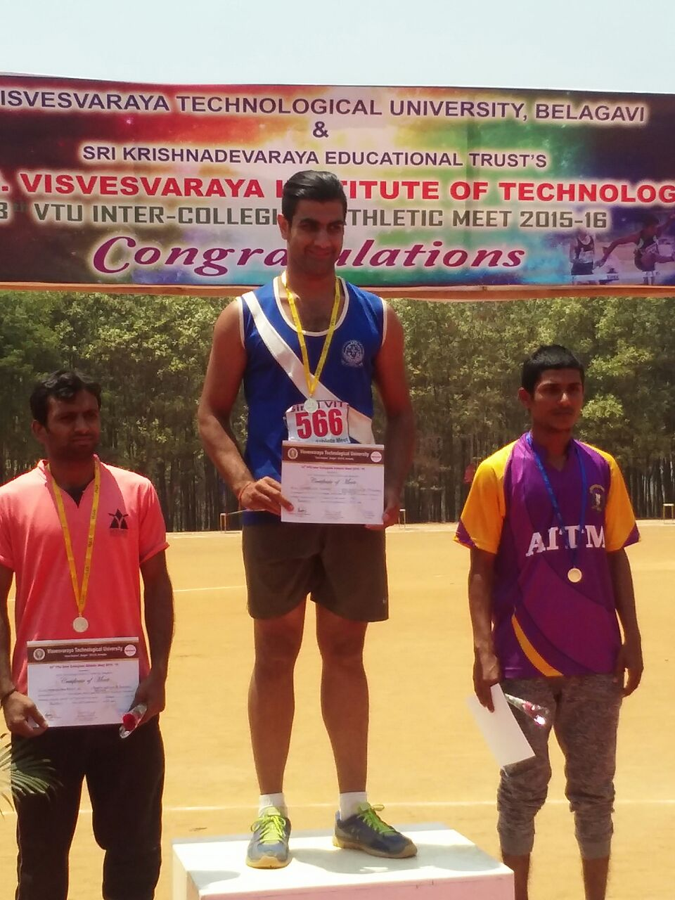
Kumar Avi Tandon won the Gold Medal in Athletics (M&W) VTU Single Zone at Sir MVIT, Bangalore held on 24th to 27th March 2016
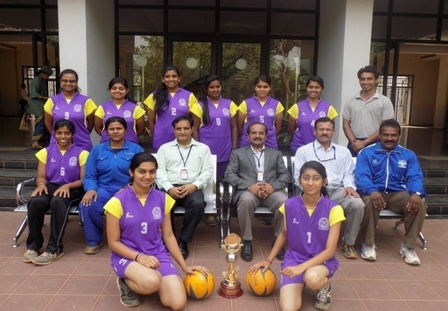
Volleyball(W) Team of BMSIT&M were the Runners-Up in Bangalore North Zone held at Acharya IT, Bangalore held on 23rd to 24th Feb 2016
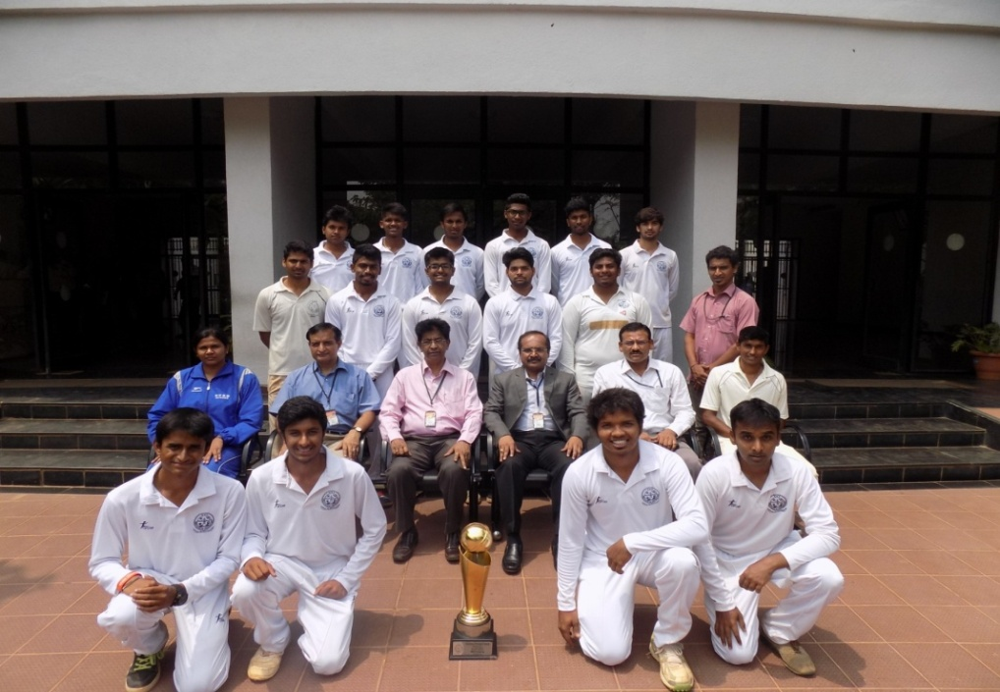
Cricket (M) Team of BMSIT&M were the Winners of Bangalore North Zone held at RLJIT, Doddaballapur held on 29th Feb to 9th March 2016
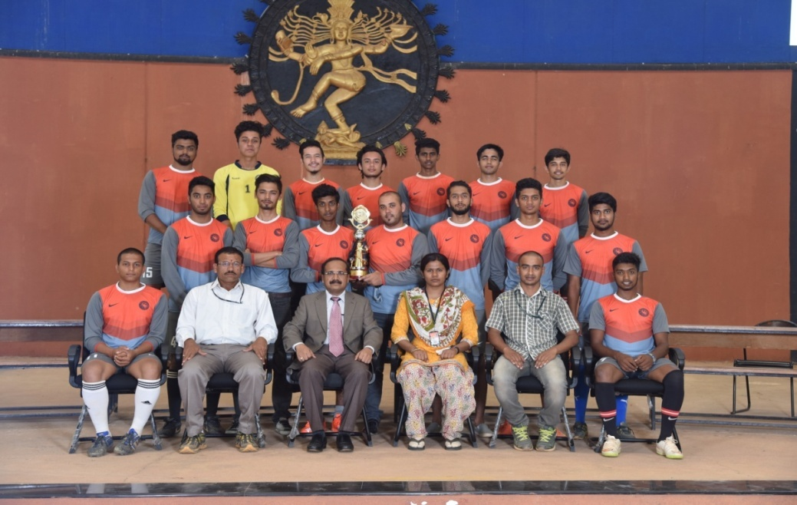
Football (M) Team of BMSIT&M were the Winners of Bangalore North Zone held at RLJIT, Doddaballapur held on 13th to 14th April 2016
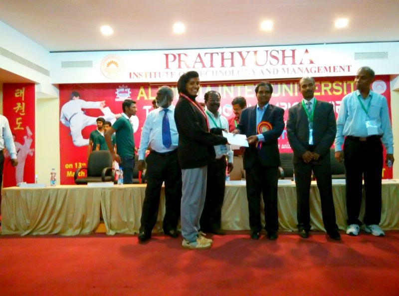
Thejaswini.K - Taekwondo (W) represented VTU in All India Inter University held at Anna University Chennai (TN) held on 13th to 17th March 2015 and won the Gold Medal
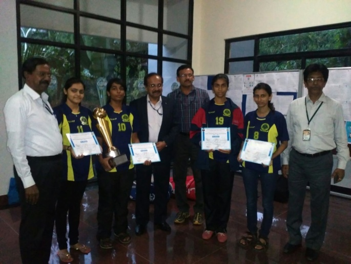
Badminton(W) Team of BMSIT&M were the Winners of Bangalore North Zone held at SJCIT, Chikkaballapur held on 20th to 21st Aug 2015
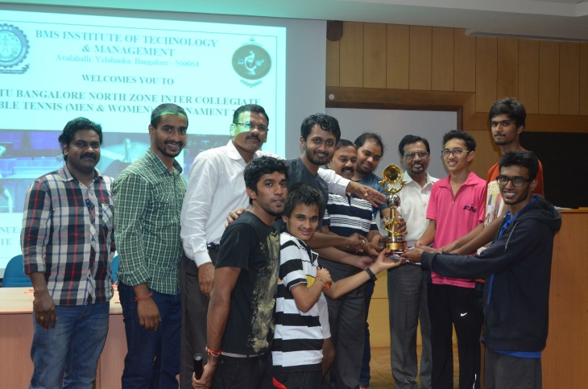
Table Tennis (M) Team of BMSIT&M were the Runners-Up at Bangalore North Zone held at BMSIT&M, Bangalore held on 4th to 5th Sept 2015
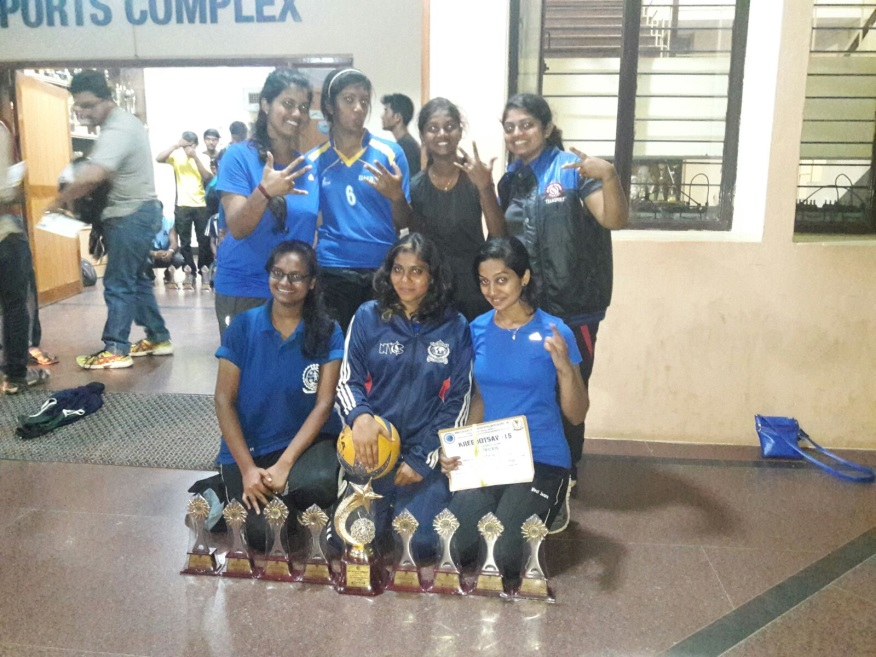
Volleyball (W) team of BMSIT&M were the Winners At BMSCE, Kreedotsav Bangalore held on 1st to 3rd Oct 2015
Events Organized
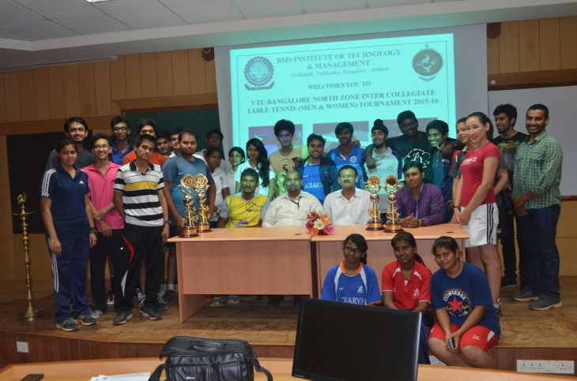
VTU Bangalore north Zone Table Tennis(M&W) Tournament 2015-16 Organized At BMSIT&M
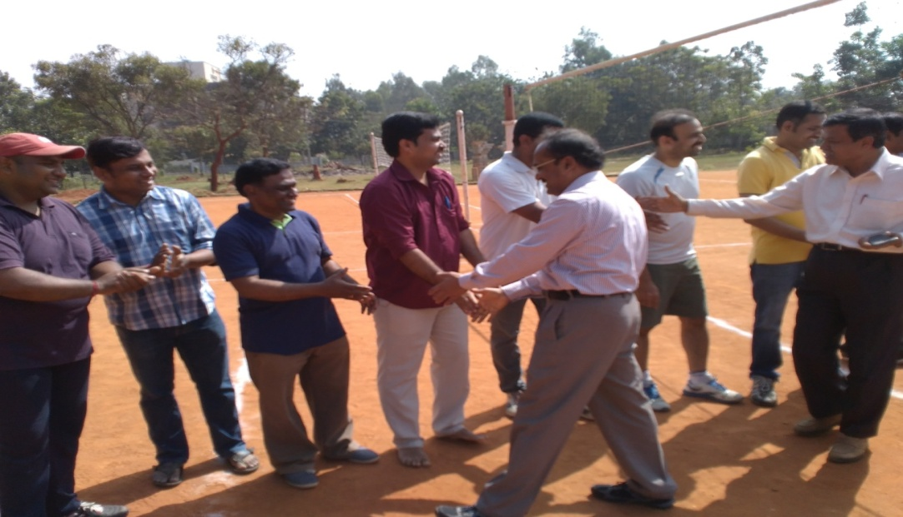
Principal Inaugurating the Staff volleyball Tournament Conducted on 25th,27th & 28th,January 2016
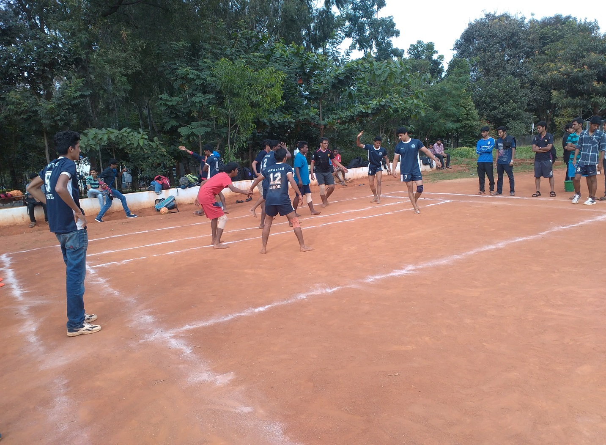
Inter Class Sports among 1st years - Kabbadi Boys Match
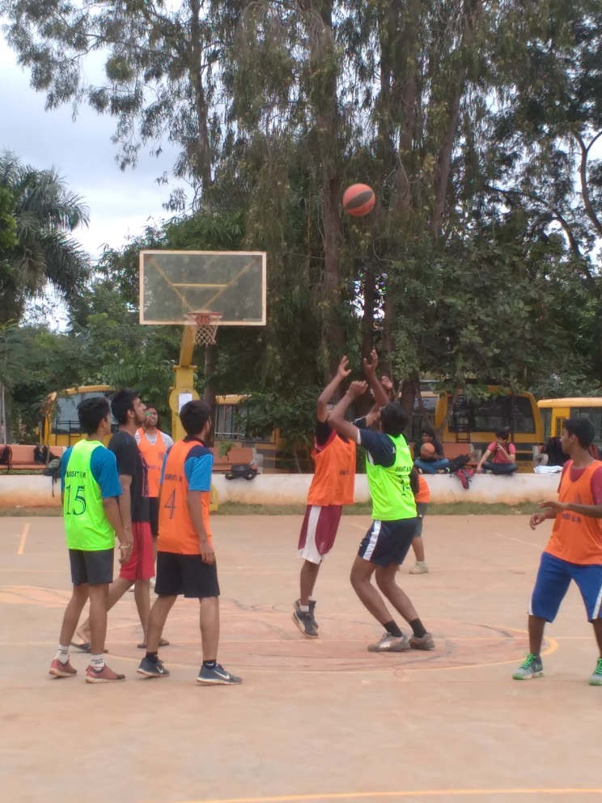
Inter Class Sports among 1st years - Basketball Boys Match
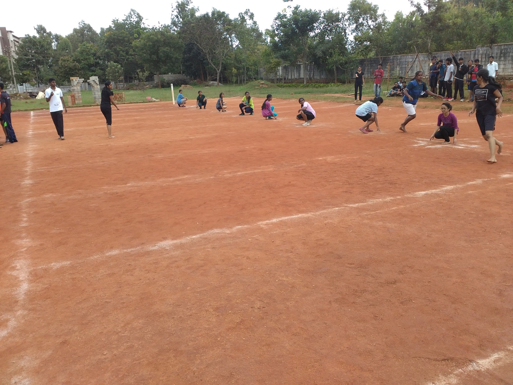
Inter Class Sports among 1st years - Kho-Kho Girls Match
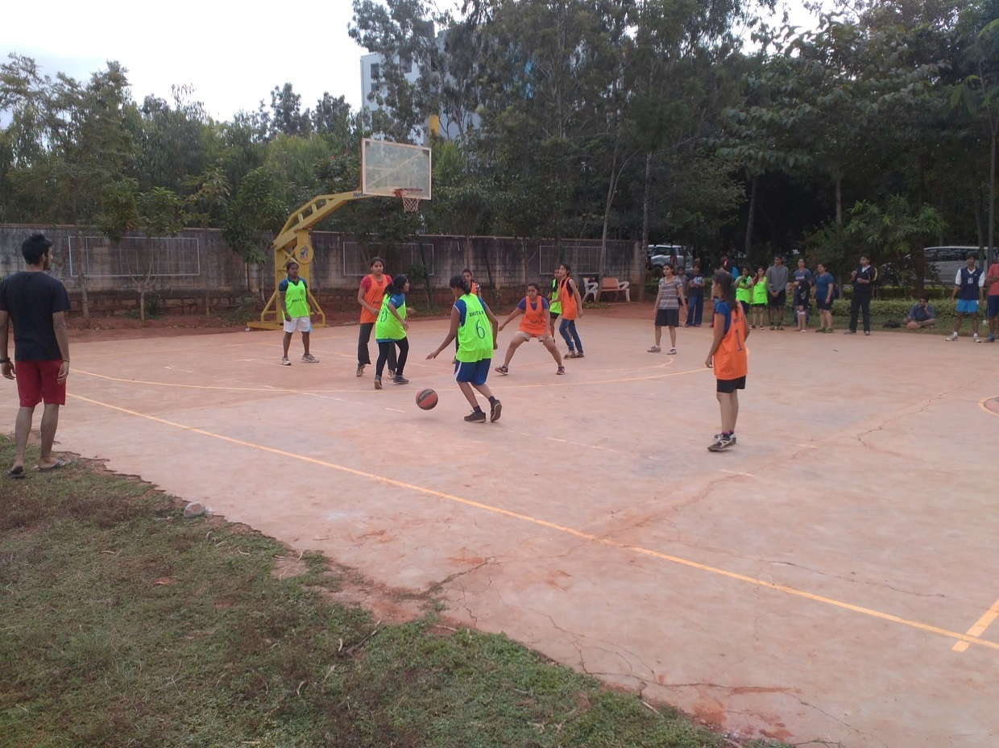
Inter Class Sports among 1st years - Basketball Girls Match
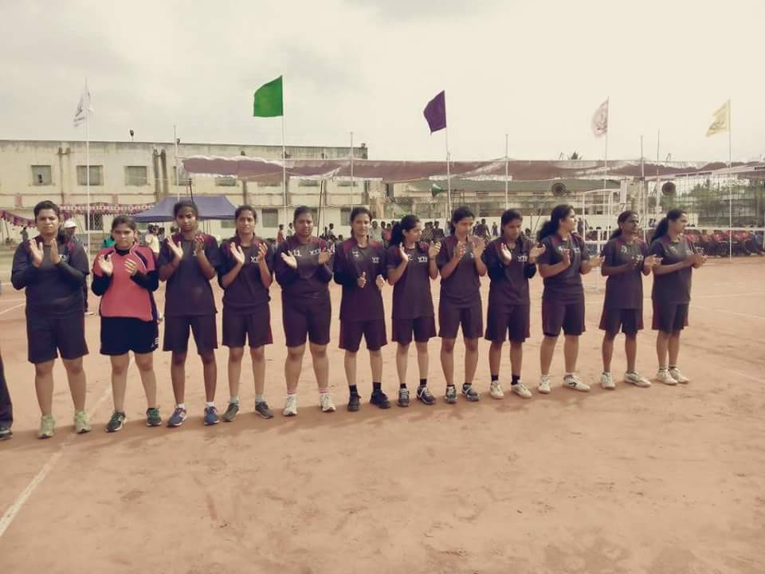
VTU Basketball (W) team posing under SRM University sports banner at Chennai (TN).
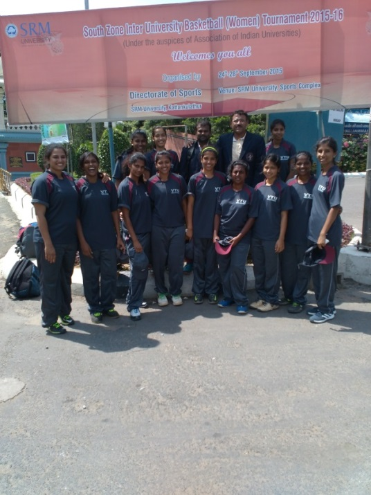
VTU Basketball (W) team is posing under SRM University sports banner at Chennai (TN).